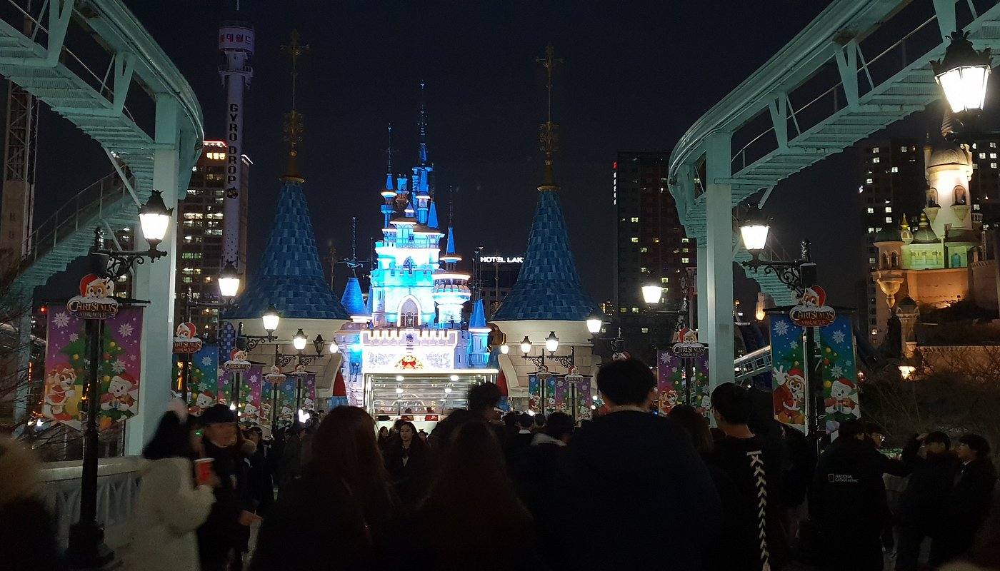
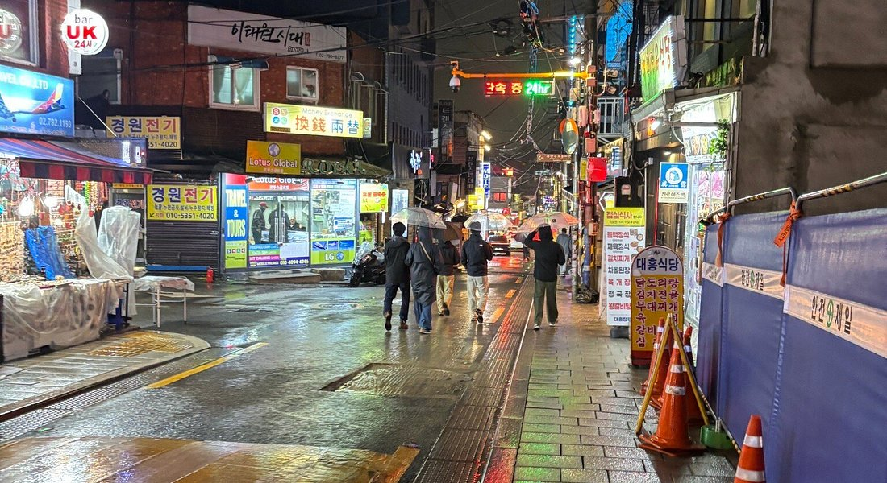

Veja os Pontos Turísticos mais famosos:

Palácio Gyeongbokgung
O mais belo e maior dos palácios da era Joseon. Foi destruído na Guerra Imjin e restaurado posteriormente.

Haeundae Beach
Praia famosa de Busan com mar calmo e atrações culturais. Muito popular no verão.

Parque Lotte World
Um dos maiores parques temáticos da Coreia, com áreas internas e externas.

Bairro Itaewon
Conhecido por sua gastronomia diversa e vida noturna vibrante.

Memorial da Guerra da Coreia
Principal museu sobre a guerra que dividiu as Coreias nos anos 1950.

Teleférico de Songdo
Teleférico de 1,62 km em Busan, com belas vistas da orla marítima.
Ilha de Jeju
Paraíso natural com vulcões, túneis de lava e praias ideais para surf.

Namsan Tower
Um dos principais pontos turísticos de Seul, com vista panorâmica da cidade.